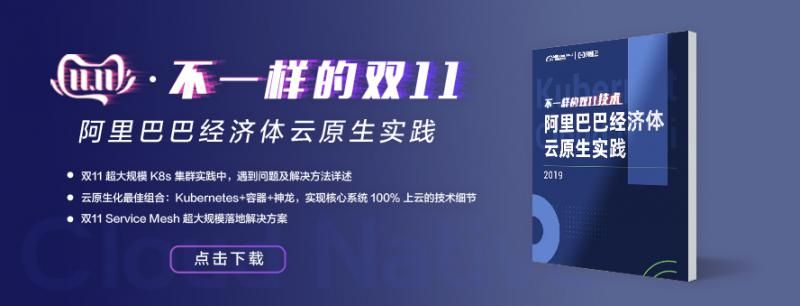

作者 | 丁宇（叔同） 阿里云智能容器平台负责人 、刘丹
2019 年阿里巴巴 双11 核心系统 100% 以云原生的方式上云，完美支撑了 54.4w 峰值流量以及 2684 亿的成交量。随着阿里巴巴经济体云原生技术的全面升级，容器性能、稳定性及在线率也得到了全面提升。本文作者将从云计算时代容器的发展路径为出发点，剖析阿里云的容器技术演进历程，借此探析整个行业的发展趋势。
过去我们常以虚拟化作为云平台和与客户交互的界面，为企业带来灵活性的同时也带来一定的管理复杂度；容器的出现，在虚拟化的基础上向上封装了一层，逐步成为云平台和与客户交互的新界面之一，应用的构建、分发和交付得以在这个层面上实现标准化，大幅降低了企业 IT 实施和运维成本，提升了业务创新的效率。
从技术发展的维度看，开源让云计算变得越来越标准化，容器已经成为应用分发和交付的标准，可以将应用与底层运行环境解耦；Kubernetes 成为资源调度和编排的标准，屏蔽了底层架构的差异性，帮助应用平滑运行在不同的基础设施上；在此基础上建立的上层应用抽象如微服务和服务网格，逐步形成应用架构现代化演进的标准，开发者只需要关注自身的业务逻辑，无需关注底层实现，云原生正在通过方法论、工具集和理念重塑整个软件技术栈和生命周期。
“以容器为代表的云原生技术，用开放、标准的技术体系，帮助企业和开发者在云上构建和运行可弹性扩展、容错性好、易于管理、便于观察的系统，已经成为释放云价值的最短路径。”在提及容器演进历程中叔同强调道。最早创造和应用容器技术的是互联网公司，今天有了开放标准的云原生生态，使得容器技术得到迅速普及，越来越多的企业和开发者使用容器构建应用，共同享受这一技术红利。
目前企业级用户对于容器技术有何新的需求呢？对此，叔同表示：云原生应用落地过程中，安全性是企业用户最为关注的需求之一。传统的 RunC 容器与宿主机 Linux 共享内核，通过 CGroup 和 namespace 提供有限的隔离性，随着越来越多的企业客户开始关注容器安全，近两年新型高隔离、安全的运行时开始出现，包括 MircoVM (Kata Container、FireCracker) 方向和 gVisor 安全沙箱方向。
阿里云和蚂蚁金服团队合作，引入安全沙箱容器技术，于 2019 年 9 月发布了基于轻量虚拟化技术的 RunV 安全沙箱，相比于 RunC 容器，每个 RunV 容器具有独立内核，即使容器所属内核被攻破，也不会影响其他容器。阿里云容器服务提供了端到端的云原生安全架构，包括基础设施安全、软件供应链安全和运行时安全，为企业提供全方位、立体化、多层次的安全防护。
第二个需求是混合云架构，上云已是大势所趋，很多客户由于业务原因会考虑混合云的方式，不同云环境的基础设施和安全架构差异会造成企业 IT 和运维体系的割裂，加大管理复杂性。
在云原生时代，以容器、Kubernetes 为代表的技术屏蔽了基础设施差异，作为底座推动了以应用为中心的混合云 2.0 架构到来，满足了用户诉求。同时企业在运营效率、研发效率、运行成本以及系统容错性、可维护性等方面，也提出了更高的要求。阿里云在整个容器产品的研发过程中，致力于解决企业痛点，尽管各个企业对于上云的诉求有诸多不同，但容器和云原生作为一种普适技术，可以满足不同企业不同层次的需求。
谈及阿里云对于容器技术与产品的创新，叔同强调，“阿里云希望在云原生领域继续走社区路线，和开源技术完全兼容，利用阿里巴巴经济体的规模复杂度和阿里云客户的场景丰富度，不断创新，形成云原生的技术领先并回馈社区共建标准。2019 年年初我们将云原生大规模生产落地最佳实践沉淀下来，以开源项目 OpenKruise 的方式向社区开放，一方面帮助企业客户在云原生的探索过程中，少走弯路减少技术碎片化；一方面推动上游社区逐渐完善和丰富应用自动化管理能力。
在 2019 年 10 月，阿里云联合微软一起发布开放应用模型 Open Application Model(OAM)，OAM 是专注于描述应用生命周期的标准规范，可以帮助应用开发者、应用运维人员和基础架构运维团队更好地进行协同。在这个模型里开发人员负责定义应用组成、依赖与架构；应用运维人员负责定义应用运行时配置与运维需求，比如发布策略和监控指标，而基础架构运维团队可以针对应用部署环境的不同，配置定制化参数，通过这种关注点分离的设计，可以将应用定义、运维能力与基础设施实现解耦，让应用交付变得更加高效、可靠和自动化，解决行业痛点。
Serverless 通过更高层次的抽象，让开发者免去资源管理、日常运维等工作，做到简化研发、极致弹性、按用付费。阿里云打造了函数计算产品 FunctionCompute：
在技术创新的驱动下，阿里云希望成为云原生最佳的产品实现，继续发挥国内最大规模的云原生应用实践、国内最丰富的云原生产品家族、国内最大的云原生客户群体、国内最全面的云原生开源贡献的优势，服务更广泛的企业客户和开发者。”
“阿里云与其他云厂商最大的不同，就是阿里巴巴的核心业务运行在云上，形成最好的创新土壤，也就是说我们最先进的技术，首先会在阿里巴巴自己的业务体系中进行尝试，得到了大规模的运用，证明其技术的普适性与价值后再开放给客户。”
在谈及阿里云容器化进展时，叔同强调：任何技术都会在阿里巴巴自己的业务体系中得到尝试与应用， 2011 年阿里云开始迈进容器大门，2013 年 Docker 问世，阿里云容器迅速融合其先进理念，并在 2015 年推进集团业务全面的容器化演进，而这一系列的发展与演进其实都离不开 双11 大促的需求，例如全面容器化帮助 双11 大促实现快速弹性扩容。
在 双11 活动的历练中，数以百万的容器支撑着 双11 活动顺利进行。由于业务的超大规模使得其复杂程度非常高，这也为容器技术带来了更大的挑战。例如在容器镜像分发过程中，一次发布分发几万个镜像，这样巨大的流量是一个不小的挑战。为实现效率的极致要求，阿里云利用 P2P 技术，实现大规模大批量的快速分发，实现 10 秒内完成跨机房镜像下载容器启动。
容器技术对于 双11 的显著影响还包括在具体的混部技术实施中，叔同表示通过混部技术，阿里巴巴集团范围内能够节省 30% 左右的 IT 成本支出，能够在 双11 这个特殊时间段里，将每万笔交易成本下降超过 75%。
容器技术已经获得了业界的广泛认可，在未来的发展前景，不仅取决于其在技术领域的卓越表现，同时也需要与更多的技术相融合，从而成为与时代共同进步的成功产品技术。
早期 Kubernetes 上主要运行无状态的 Web 应用，比如基于 Apache Dubbo/Spring Cloud 的微服务应用，现在越来越多的企业核心业务、数据智能业务和创新业务也运行在 Kubernetes 之上。以阿里云自身的云产品举例，包括企业级分布式应用服务 EDAS 、实时计算平台 Flink 、弹性 AI 算法服务 EAS 、区块链平台 BaaS 都部署在阿里云 Kubernetes 服务 ACK 之上。
从应用架构演进来看，容器的发展促进了微服务的发展。微服务在早期落地遇到的大问题是架构拆分导致的运维复杂度和环境不一致，正是通过容器对应用和其运行环境的打包和隔离，很好的解决微服务体系的痛点，让微服务得以快速发展。微服务架构的引入解决了一些问题的同时，入侵了研发框架，框架迭代和研发迭代被耦合，并且在多语言环境的支持不够友好，在管理上也更加复杂。因此社区开始尝试 Service Mesh，逐渐把微服务能力从框架能力下沉为平台能力，可以看到容器与微服务在互相促进。
“云原生与 AI 是绝佳搭档，两者是相互赋能的。”在提及 AI 与容器的融合时叔同强调。首先 AI 是新兴领域，架构上没有那么多历史包袱，另外 AI 计算本身对弹性、资源效率和部署效率有所要求，容器技术可以解决上述问题。GPU、FPGA、专有的 ASIC 芯片等新架构，带来巨大算力提升的同时也带来管理维护的难度，利用 Kubernetes 提供对异构资源的统一管理和高效调度，提升弹性支持细粒度共享，可以提升资源利用率 3 到 5 倍。
AI 对于容器云原生技术同样帮助巨大，AI 往往代表着业务场景，这对于云原生技术如何更为普适通用提供了丰富的验证空间，从而提升了云原生技术的成熟度。
容器技术出现已经超过 6 年，Kubernetes 的快速发展已不是新闻，但这并不意味着容器技术的生态系统已经发展平缓。相反的是，容器及其周边的技术体系还在保持高速发展。
谈及未来关注的新技术、新方向，叔同坦承要让容器走到所有的环境中，不仅是传统 IDC，更要走到公共云、专有云、边缘节点、物联网、大数据、AI 等各种场景中，希望运用云原生技术降低云计算的使用门槛，真正实现云上拐点。
点击下载《不一样的 双11 技术：阿里巴巴经济体云原生实践》

本书亮点
“阿里巴巴云原生关注微服务、Serverless、容器、Service Mesh 等技术领域、聚焦云原生流行技术趋势、云原生大规模的落地实践，做最懂云原生开发者的技术圈。”